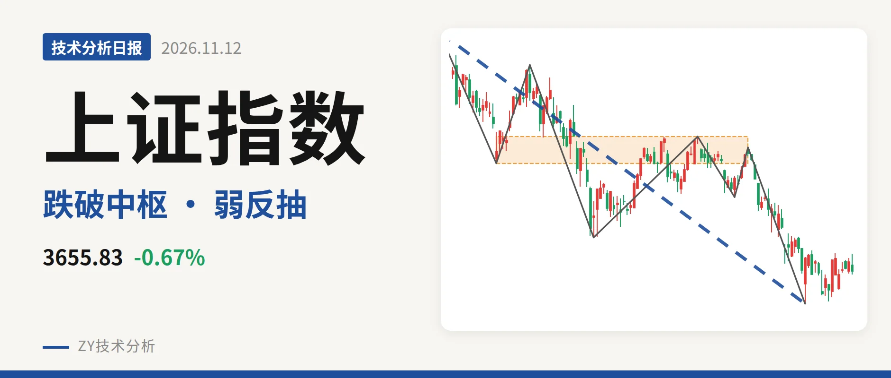
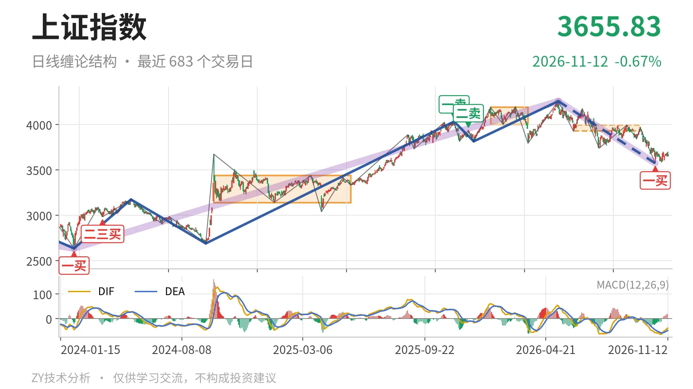
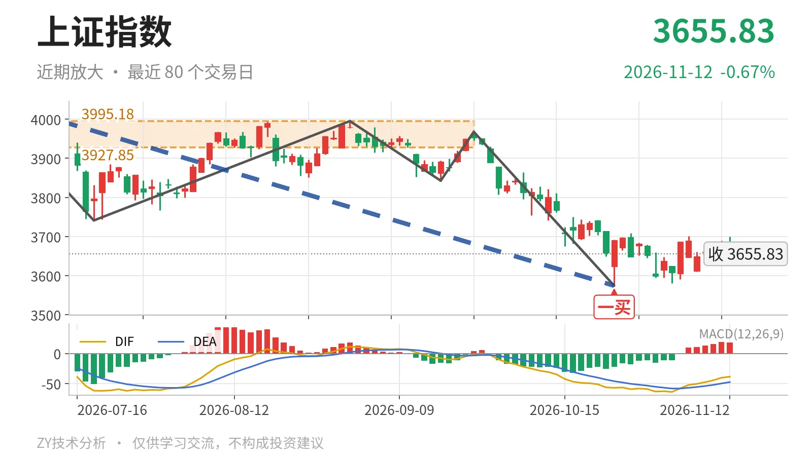

上证指数｜跌破最近中枢 反抽看3928点

最近日线中枢 3927.85—3995.18点，收盘位于中枢之下
一句话：收于3655.83点，位于最近中枢下方，反弹尚未成笔，结构偏弱
🧭 走势结构：大级别上涨后的回落仍在延续
当前处于2024年2月5日以来上涨段之后的回落段，大级别没有出现反转确认。那段上涨从2635.09点走到4258.86点，涨幅约61.6%；5月14日至10月23日下跌段由4258.86点回到3574.27点，跌约16.1%，还在延续。日线线段同样把5月14日至10月23日这一段标为尚未结束，内含7笔。因此当前不是中枢震荡，而是上涨之后的下跌段主导。

📉 中枢与位置：跌破日线中枢，中枢下移
最新收于3655.83点，已跌破最近日线笔中枢下沿。最近中枢为6月8日至9月22日的3927.85—3995.18点，尚未完成；前一个1月14日至3月23日中枢在4002.78—4190.87点。两者形成中枢下移，收盘价低于最近下沿约6.9%。更大级别角度看，2021年7月28日至2023年5月9日线段中枢在3312.72—3418.95点。当前还在其上方，下方有历史中枢承接。
📍 买卖点：10月23日一买后只有弱反抽
最近的日线笔买点是10月23日一买3574.27点，所在下跌笔9月22日至10月23日已经结束。之后10月26日至11月12日14根K线最高3708.20点、最低3580.38点，尚未走出新日线笔，收在3655.83点。这个一买未被新低破坏，但只形成弱反抽。此前2025年11月14日一卖4034.08点、2025年12月8日二卖3936.31点虽一个比一个低，但5月14日上冲4259点后，两者已退为较小级别卖点，日线结构关键仍是5月14日以来的回落。

⚖️ 背驰：新低不新弱，但面积未收缩
最后一段下跌的背驰并不标准。6月23日至7月20日下跌笔低点3741.11点，DIF低点-61.8，绿柱面积289；9月22日至10月23日下跌笔低点3574.27点，DIF低点-57.1，绿柱面积347。价格创出新低，但DIF低点抬高，属于“新低不新弱”；不过绿柱面积没有萎缩，反而放大，所以不是标准面积背驰。最新MACD红柱只有18.1，DIF仍在零轴下方，反弹力道有限。
🔎 关键位置观察：3928点与3574点定强弱
当前结构偏弱，弱在收盘位于最近中枢下方且反弹未成笔。上方看3928点附近，即6月8日至9月22日中枢下沿3927.85点；反抽若回不到3928点附近，对最近中枢就有三卖结构压力。下方看3574点附近，即10月23日一买位置；回踩若不破3574点，则下跌段有做底条件。若跌破3574点，则一买被破坏，5月14日以来的下跌段继续向下延伸。重新站上3928点附近，当前下跌更可能是中枢扩展，结构才回到中性。当前价格离3574点更近，离3928点更远，短期偏弱。
⚠️ 本文为基于公开行情数据的缠论技术结构记录，由程序自动计算并生成，仅供学习交流，不构成任何投资建议。市场有风险，投资需谨慎。